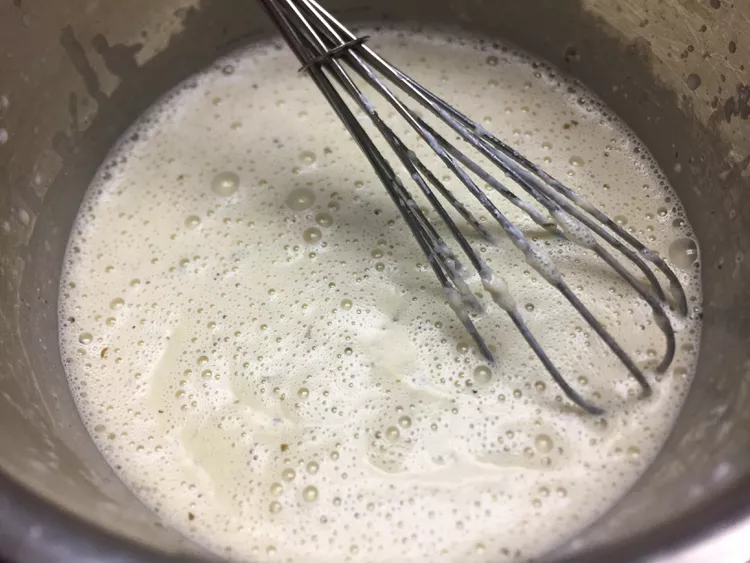

Creamy Pesto

Description
I use pre-made or prepared pesto. Pesto concentrate also works great.
Very simple and really tasty sauce. Great over pasta, veggies, and chicken. Enjoy!
Ingredients
- 2 tablespoons butter
- 1 cup heavy whipping cream
- 1 tablespoon all-purpose flour
- 1 teaspoon salt
- 1/2 teaspoon ground black pepper
- 3 tablespoons sour cream
- 3 tablespoons pesto, or more to taste
Steps
- Melt butter in a saucepan over medium heat. Stir in heavy cream.
Add flour and mix well to remove clumps. Season with salt and pepper
- Stir sour cream and pesto into the saucepan. Reduce heat to medium-low;
simmer, stirring until flavors combine, 2-3 minutes more